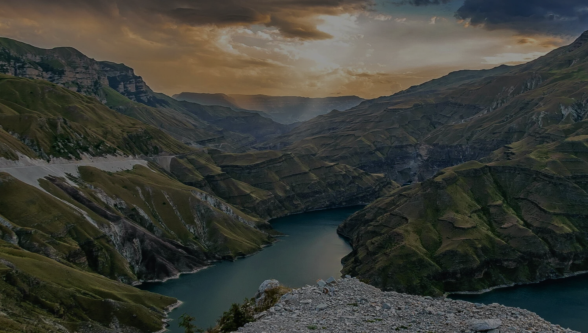

Дагестан за
5 дней
Дагестан — это регион, где за одну поездку можно увидеть аулы, море, пустыни и горы!
День 1. Сулакский каньон — визитная карточка Дагестана
Старт маршрута — Махачкала
Что посмотреть:
- Первый день — лёгкий и очень эффектный. Уже через пару часов после выезда из Махачкалы вы окажетесь у одного из самых впечатляющих природных объектов России — Сулакский каньон
- По дороге стоит заехать на бархан Сарыкум — крупнейшую песчаную дюну в Европе. Контраст пустыни и гор создаёт ощущение, будто вы попали сразу в несколько стран
- Главные виды открываются в посёлке Дубки — здесь расположены лучшие смотровые площадки на каньон и Чиркейская ГЭС
Где остановиться:
- Кемпинг «Главрыба»
- Гостевой дом «Родник» в Зубутли
Это последний день с полноценной инфраструктурой — дальше начинается настоящее горное приключение, поэтому стоит заправиться

День 2. Гуниб — сердце горного Дагестана
Переезд: Сулакский каньон — Гуниб
Что посмотреть:
- Дорога уходит в горы. Конец дня — Гуниб, село на высоте около 1500 метров, где в 1859 году завершилась Кавказская война
- Гунибская крепость и беседка Шамиля — главные исторические точки. Отсюда открывается панорама на Гунибское водохранилище и окрестные хребты
- В местном музее хранятся вещи Александра II и Пирогова, можно примерить традиционную одежду народов Дагестана
Где остановиться:
- Гостевой дом «Родное гнездо» в Малом Гоцатле
- Гостиница «Санда» в Гунибе
Горные дороги извилистые — не спешите. Перед выездом проверьте тормоза, охлаждение и шины. В горах погода меняется быстро, летом возможен туман

День 3. Аул-призрак Гамсутль
Переезд: Гуниб — Гамсутль — Хунзах
Что посмотреть:
- Гамсутль — самый известный «аул-призрак» Дагестана. Село стоит на горном хребте, последний постоянный житель умер, остались только каменные дома и ветер
- Машина остаётся на парковке у подножия, дальше — пешком около часа. Нужны нескользящая обувь и вода
- После Гамсутля — Карадахская теснина, «ворота чудес». Узкий каменный коридор с отвесными стенами, солнце попадает вниз только в определённые часы
Где остановиться:
- Хостел «Водопад» в Хунзахе
- Хостел «Каньон» в Хунзахе
Не заезжайте ночью на непроверенные грунтовки и не пытайтесь штурмовать на автодоме офф-роуд-маршруты вроде Салтинского каньона.

День 4. Ирганайское водохранилище
Переезд: Хунзах — Ирганай — Дербент
Что посмотреть:
- Самый «дорожный» день маршрута. Из Хунзаха на юг, через Ирганайское водохранилище — крупнейшее в Дагестане
- Бирюзовая вода в кольце гор — отличное место для остановки и фото. Здесь стоит сделать паузу и отдохнуть
- Ближе к вечеру — спуск к Прикаспийской низменности и Дербент, один из древнейших городов России
Где остановиться:
- Гостиница «Визит» в Дербенте
- Гостиница «Аэропорт» в Дербенте
Выезжайте рано. В Дербенте не заезжайте в старый город на автодоме — оставляйте машину у гостиницы

День 5. Дербент — древний город России
Финиш маршрута: Дербент — Махачкала
Что посмотреть:
- Нарын-Кала — древняя крепость над городом и Каспием. Обязательна к вашему посещению
- Старый город с узкими улочками, старинными мечетями и караван-сараями стоит неспешной прогулки
- После обеда — возвращение в Махачкалу по побережью. Если есть время, задержитесь на набережной и попробуйте свежую каспийскую рыбу